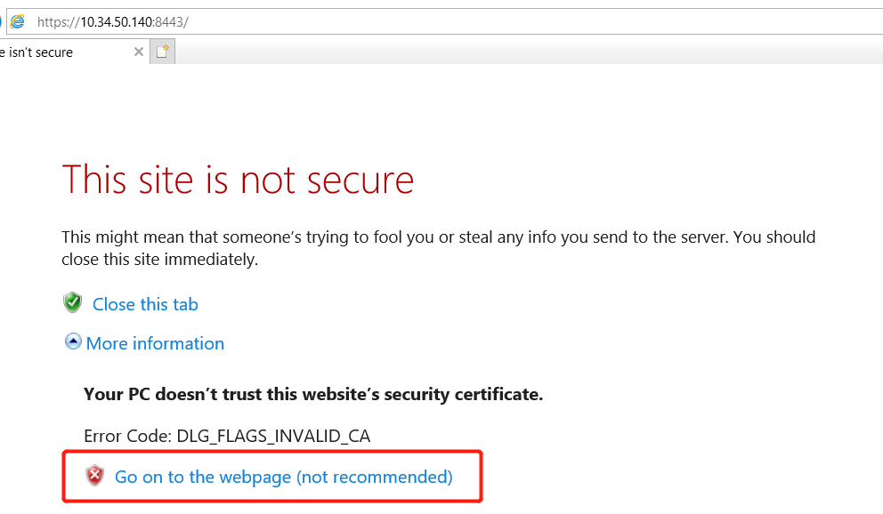
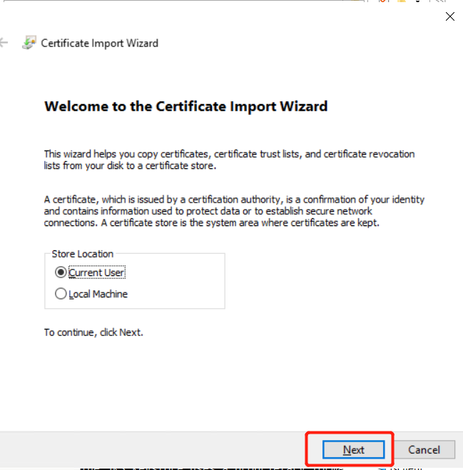
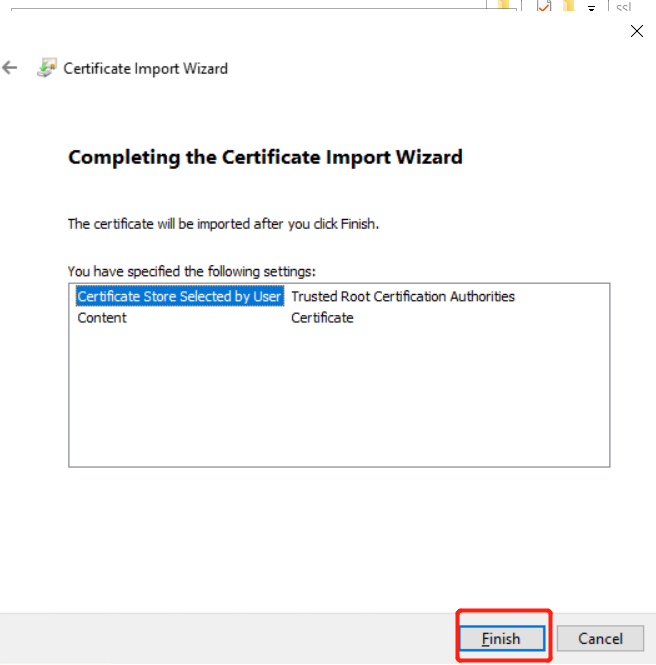
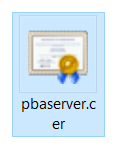
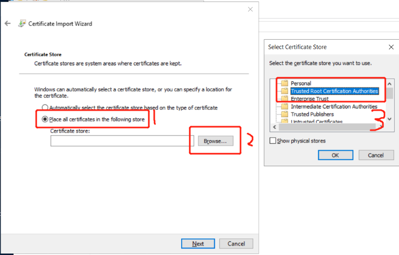

# 操作系统
# 软件依赖
^ Lastest ~ minimum
- Jdk1.8~
- Tomcat7
# 实验环境
- Windows10
- Jdk-1.8
- Tomcat7
- 服务器 Server：4x core, 8GB RAM, 50GB HDD, Win2017 server OS
- 客户端 Server：4x core, 8GB RAM, 50GB HDD, Win2017 server OS
# SSL 与 HTTPS
# SSL
SSL 由 Netscape 公司于 1994 年创建，它旨在通过 Web 创建安全的 Internet 通信。它是一种标准协议，用于加密浏览器和服务器之间的通信。它允许通过 Internet 安全轻松地传输账号密码、银行卡、手机号等私密信息。SSL 证书就是遵守 SSL 协议，由受信任的 CA 机构颁发的数字证书。使用 SSL 证书有许多好处：
- 保障服务器和浏览器之间的通信安全
- 验证网站的真实身份，区别于钓鱼欺诈网站
- 加密用户的敏感信息以确保安全
- 提高 SEO 搜索引擎排名
- 提升用户对网站的信任
- 有助于提高网站的在线销售业绩
# HTTPS（安全超文本传输协议）
HTTPS 是 HTTP 的安全版本，它可以通过 SSL / TLS 连接保护在线传输的任何通信。简而言之，HTTPS=HTTP+SSL。如果想要建立 HTTPS 连接，则首先必须从受信任的证书颁发机构（CA）Gworg 机构注册 SSL 证书。安装 SSL 证书后，网站地址栏 HTTP 后面就会多一个 “S”，还有绿色安全锁标志。网站使用 HTTPS 的原因有很多：
- HTTPS 有助于在服务器和浏览器之间建立安全通信
- 它可以保护网站免受篡改或窃听
- 它可以保护用户免受中间人攻击
- 各大主流浏览器纷纷要求网站从 HTTP 升级 HTTPS 访问
- 它广泛地被银行、医疗、电子商务、社交媒体和政府等行业使用
# 单向验证与双向验证
- 单向认证只要求站点部署了 ssl 证书就行，任何用户都可以去访问（IP 被限制除外等），只是服务端提供了身份认证。而双向认证则是需要是服务端需要客户端提供身份认证，只能是服务端允许的客户能去访问，安全性相对于要高一些
- 双向认证 SSL 协议要求服务器和客户端双方都有证书，单向认证 SSL 协议不需要客户端拥有 CA 证书，以及在协商对称密码方案，对称通话密钥时，服务器发送给客户端的是没有加过密的（这并不影响 SSL 过程的安全性）密码方案
- 如果有第三方攻击，获得的只是加密的数据，第三方要获得有用的信息，就需要对加密的数据进行解密，这时候的安全就依赖于密码方案的安全。而幸运的是，目前所用的密码方案，只要通讯密钥长度足够的长，就足够的安全。这也是我们强调要求使用 128 位加密通讯的原因。
- 一般 Web 应用都是采用单向认证的，原因很简单，用户数目广泛，且无需做在通讯层做用户身份验证，一般都在应用逻辑层来保证用户的合法登入。但如果是企业应用对接，情况就不一样，可能会要求对客户端（相对而言）做身份验证。这时就需要做双向认证。
# 单向验证流程
- 服务器创建密钥库，里面保存着自己的证书
- 服务器开启 SSL，并使用自己的证书
PS: 如果证书不是权威机构签发的，客户在访问服务器的时候，浏览器会显示红色，这时候要么服务器换成权威证书，要么客户端手动导入证书
# 双向验证流程
- 服务器创建密钥库，里面保存着自己的证书密钥和实体名，后缀为 jks 或者 keystore
- 客户端创建密钥，然后导出 cer 格式证书发给服务器
- 服务器创建信任密钥库，把客户端的证书密钥加入到信任密钥库
- 服务器开启 SSL，配置自己的证书与信任的密钥库
- 客户端将密钥导入浏览器，即可访问服务器
# 证书
SSL 证书主要的作用就是传输信息加密和网站标识，在用户与服务器之间提供有效的身份验证方案，可以有效地保障用户的隐私信息在传输的过程不被泄露。证书可分为普通证书与 CA 证书
- 普通证书：私人签发的证书，没有任何认证，当网站使用普通证书时，浏览器会弹出红色警告
- CA 证书：权威机构颁发的可靠证书
# 普通证书
想要生成普通证书，一般借助 java 自带的 keytool 工具
Keytool 将密钥（key）和证书（certificates）存在一个称为 keystore 的文件中。在 keystore 里，包含两种数据： 密钥实体（Key entity）—— 密钥（secret key）又或者是私钥和配对公钥（采用非对称加密）可信任的证书实体（trusted certificate entries）—— 只包含公钥
keytool 文件类型：
- Keystore: 密钥库，包括实体与证书密钥，是给服务器使用的，标准的歌声为 jks.
- P12: 证书的密钥，是给浏览器使用的。建立连接时，浏览器根据名字查找你拥有的密钥，然后发给服务器
- Cer: 用来认证某个 IP 或者域名的证书。当你访问的域名没有证书或证书没有被认证的时候，浏览器会显示红色，反之显示绿色
# CA 证书
据 SSL 的安全强度，网站 SSL 证书的分类有以下三种
- 域名型证书 DV SSL：域名型证书无须进行繁杂的书面审查程序，仅需进行域名有效性验证，申请流程便捷，证书签发快速，仅需短短几分钟，即可部署于所有主流浏览器及移动设备之上。在网络黑客、钓鱼威胁层出不穷，域名型 SSL 数字证书可有效保护通过互联网所发送的数据，为网络账户登录、邮件等机密信息资讯提供安全防护。
- 企业型证书 OV SSL：网络市场中有数以万计的网站，而其真实性、可靠性与否，则形成了网友浏览该网站的主要疑虑。企业型证书针对网站域名及所有权进行严格书面审查，通过审核之后，于证书上标示企业资料，让访问用户可以直接了解企业身份并强化信任感，为后续其他基于互联网的服务内容提供妥善保护。
- 增强型证书 EV SSL：增强型证书是最高级别的 SSL 证书，意味着网站为用户提供最佳信赖的浏览环境，并有助于将陌生访客转化为精准销售客户。EVSSL 的最大特点便是激活网站在浏览器的标签栏使其变绿，利用鲜明的标示告诉用户：这个网站正受到最严密的信息安全防护，同时通过证书标示增强机构信赖及网站真实合法认定。
此外，为了确保子域名的信息安全，又出现了通配符型的证书 Wildcard SSL（一张 SSL 证书通常是颁发给完全限定的域名，但是随着网络营销日益蓬勃，许多企业开始利用子域名的操作方式运作各式营销活动）以同时保护一个域名下的所有子域名网站，大幅节省了时间和管理成本，强化了网站信息安全管理效率。
# Tomcat 服务器 SSL 单向认证
生成服务器证书
按 Ctrl + R , 打开运行窗口，输入 cmd, 回车
输入以下命令:keytool -genkey -v -alias server -keyalg RSA -keystore c:\ssl\server.keystore -validity 36500
- alias: 自定义证书名
- keyalg: 加密算法
- keystore: 证书保存的文件名，确保路径存在，否则报错
- validity: 证书有效期，36500 表示 100 年，默认值是 90 天
- 修改 tomcat 配置文件
修改 Tomcat 配置文件：tomcat\conf\server.xml
在下面添加如下语句：#找到这行
<Service name="Catalina"><Connectorport="8443"
protocol="org.apache.coyote.http11.Http11Nio2Protocol"
SSLEnabled="true"
maxThreads="150"
scheme="https"
secure="true"
clientAuth="false"
sslProtocol="TLSv1.2"
keystoreFile="c:\\ssl\server.keystore"
keystorePass="123456"
/>
- Port: 端口，本例使用了 8443，默认是 443
- Protocol: 网络协议，这里用了 http1.2
- SSLEnabled: 是否启用 SSL
- maxThreads: 最大连接数
- clientAuth: false 为单向验证，true 为双向验证
- sslProtocol: SSL 协议，这里用的是 TLS1.2
- keystoreFile: 证书文件
- keystorePass: 证书密码
验证 SSL
配置完成后，我们启动或者重启 Tomcat，浏览器输入 https://10.34.50.140:8443/。出现如下界面表示 Tomcat SSL 已经启用，点击红色区域。

因为证书是自签的，所以未经认证，浏览器呈现红色
让客户端信任服务器证书
按 Ctrl + R, 打开运行窗口，输入 cmd, 回车keytool -keystore c:\ssl\server.keystore -export -alias server -file c:\ssl\server.cer
这个命令将会在 c:\ssl\ 目录导出一个 server.cer 的文件，这个就是证书文件
双击 server.cer
点击安装证书
下一步
选择根 CA 证书
完成
关掉浏览器，再次打开浏览器访问网址
红色已经消失，并换成了锁，至此单向验证全部配置完成

# Tomcat 服务器 SSL 双向认证
# 生成服务器证书
在++服务器++命令窗口输入下面命令
```bash
keytool -genkey -v -alias pbaserver -keyalg RSA -keystore c:\ssl\pbaserver.keystore -validity 36500
```
alias: 自定义证书名
keyalg: 加密算法
keystore: 证书保存的文件名，确保路径存在，否则报错
validity: 证书有效期，36500 表示 100 年，默认值是 90 天
生成了一个密钥库文件
# 在客户端上生成证书
在++客户端++上运行下面命令
```bash
keytool -genkey -v -alias client -keyalg RSA -storetype PKCS12 -keystore c:\ssl\client.p12
```
alias: 证书名
keyalg: 加密算法
storetype: 为浏览器生成证书，以便让服务器来验证它。为了能将证书顺利导入至 IE 和 Firefox，证书格式应该是 PKCS12
keystore: 证书存储的位置
# 导出客户端证书
在++客户端++上运行下面命令
由于不能直接将PKCS12格式的证书库导入，必须先把客户端证书导出为一个单独的CER文件
在命令行执行下面命令:
```bash
keytool -export -alias client -keystore c:\ssl\client.p12 -storetype PKCS12 -storepass 123456 -rfc -file c:\ssl\client.cer
```
export: 导出命令
keystore: 密钥库文件
storetype: 导出格式
storepass: 密钥密码
file: 导出的证书文件名
最终得到两个文件，然后将 client.cer 的文件发给服务器
# 创建服务器信任密钥
在服务器命令窗口输入下面命令
服务器需要创建一个信任的密钥库，里面存放着服务器信任的客户端证书。拿到客户端证书后，需要将该证书导入到该密钥库。
首先先新建一个信任密钥库 trustkeystore.keystore，在命令行执行下面命令：
keytool -import -v -file c:\ssl\client.cer -keystore c:\ssl\trustkeystore.keystore |
- import: 导入命令
- file: 导入的证书文件
- keystore: 被导入的密钥库文件
然后查看一下服务器密钥库，输入以下命令:
keytool -list -keystore c:\ssl\trustkeystore.keystore |
- list: 列表命令
- keystore: 密钥库文件
可以看见有一个被信任的客户端证书:trustedCertEntry
# 客户端信任服务器证书
在客户端上运行下面命令
现在服务器是已经信任了客户端的了，但是由于是双向认证的，客户端也需要认证服务器的证书。因此需要导出服务器的证书给客户端
输入以下命令:
keytool -keystore c:\ssl\pbaserver.keystore -export -alias pbaserver -file c:\ssl\pbaserver.cer |
- keystore: 密钥库文件
- export：导出命令
- alias：证书名
- file: 导出的证书
然后把生成的 pbaserver.cer 发给客户端
# 修改 Tomcat 配置文件
在服务器执行
打开 Tomcat 根目录下的 /conf/server.xml，找到 Connector port="8443" 配置段，修改为如下：
#找到这行 | |
<Service name="Catalina"> | |
<Connector port="8443" clientAuth="true" protocol="org.apache.coyote.http11.Http11Nio2Protocol" | |
SSLEnabled="true" maxThreads="150" scheme="https" | |
secure="true" sslProtocol="TLSv1.2" | |
keystoreFile="c:\\ssl\pbaserver.keystore" keystorePass="123456" keyPass="654321" | |
truststoreFile="c:\\ssl\trustkeystore.keystore" truststorePass="123456" /> |
- clientAuth: 设置是否双向验证，默认为 false，设置为 true 代表双向验证
- keystoreFile: 服务器证书文件路径
- keystorePass: 服务器证书密码
- keyPass: 服务器密钥库主密码（就是创建证书时二次输入的密码）
- truststoreFile: 服务器信任的密钥库，这里使用了和 keystoreFile 一样的密钥库，可以用另一个文件来存储
- truststorePass: 信任的密钥库的密码
- SSlProtocol: SSL 协议，这里使用 TLSv1.2
- SSLEnabled: 是否使用 SSL
- Protocol: 连接协议
重启服务器
# 客户端导入自己的密钥
在客户端上操作
此时我们从客户端打开 https://10.34.50.140:8443/pentaho/
第一张图表示服务器已经开启了 SSL，但是由于证书不是权威机构的，所以浏览器会提示是否继续访问。我们点击继续访问进入第二张图
第二张图表示服务器拒绝了客户端的请求，因为目前客户端并没有将自己的密钥（8.4 生成的 client.p12）导入浏览器，所以服务器无法识别客户端而拒绝请求
接下来，我们开始导入客户端密钥进浏览器
- 双击之前创建的客户端密钥 client.p12
- next
- next
- 输入密码，next
- next
- 完成
- 关闭浏览器，再次访问，会提示是否使用该证书，点 OK
- 依然是浏览器的警告提示，点继续访问
- 再次确认使用该证书
这次我们可以进入了～，不过浏览器仍然显示红色，因为该服务器 CA 证书是我们自己签名的，浏览器不信任，所以我们只有手动将该服务器证书设置为信任
# 客户端信任服务器证书
在客户端上操作
这时候服务器应该将证书发给客户端
- 双击服务器证书
 - 点击安装证书
- next
- 选择根认证证书
 - next
- finish
- 点 yes
- 完成
- 查看浏览器证书
这是本机的密钥，就是 client.p12
这是我们刚信任的服务器证书 - 关闭浏览器，再次访问，依旧是选择我们的证书
这次已经没有浏览器的警告了，红色提示也消失，并出现一把锁，这表示客户端与服务器已经建立起了安全的 SSL 连接了。